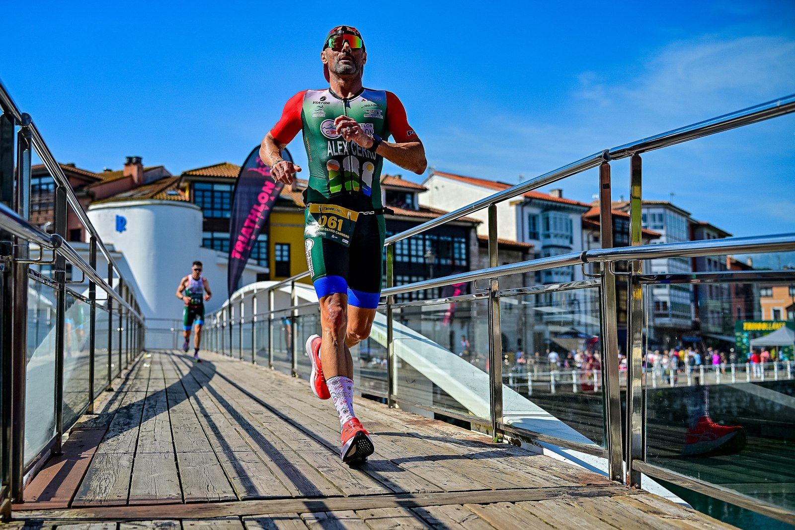
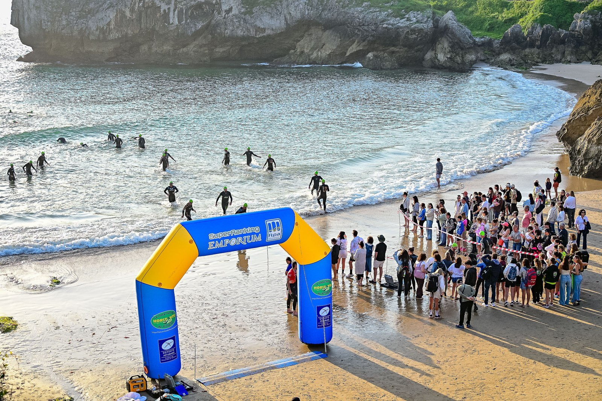

Tri100Llanes held its first edition on Sunday 24 May 2026 in Llanes, on the eastern Asturias coast, with event coverage by the Image Media team. The middle-distance triathlon doubled as the 2026 Campeonato de Asturias de Triatlón in the Media Distancia (MD) category, according to the Federación de Triatlón del Principado de Asturias's official 2026 calendar.
The roughly 100km course combined a 1.8km open-water swim in the Cantabrian Sea with an 80km bike leg on Asturian roads — fast enough over its open stretches that the regulations permitted time-trial bikes — before finishing with an 18km run completed over four laps of an urban circuit through the centre of Llanes. Organisers set a 7:30am start to get ahead of the day's high temperatures, with a route designed to combine the Cantabrian Sea with the inland Sierra del Cuera.

No overall winners or full results had been published by any organiser or federation source at the time of writing, so none are reported here. Among the competitors, CDA Puertollano's José Antonio Ruiz completed the course in 5 hours and 11 minutes, finishing inside the top 50 of his age group, according to his club's local newspaper.

The Image Media coverage team at Tri100Llanes comprised Michael Rosa, Paulo Nomade, Eduardo Castro and Nemi.